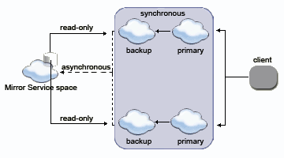

Section Summary: Reliable Asynchronous Persistency (Mirror) - advanced topics.
Custom Mirror Service Name
A Mirror Service can be configured per Space cluster. You can't have multiple Mirror services configured for the same space cluster.
If you need "multiple mirrors" for the same space cluster you can implement a Mirror Service that will route the data and operations to other multiple "agents" that will persist the data - effectively make the default Mirror act as a dispatcher.
If you have multiple different space clusters, each with its own Mirror service running, you should have a different name used for each Mirror Service.
The Mirror Service name used as part of the space config is specified via the "cluster-config.mirror-service.url" property. Its default is "jini://*/mirror-service_container/mirror-service" which match the "mirror-service" that is used as part of the url property used to start the mirror service.
As an example, let's say we would like to call my mirror service mymirror-service (instead of the default mirror-service). Here is how the mirror service should be started:
<os-core:space id="space" url="/./mymirror-service" schema="mirror" external-data-source="hibernateDataSource" />
Here is how the space should be started:
<os-core:space id="space" url="/./mySpace" schema="persistent" mirror="true" external-data-source="hibernateDataSource"> <os-core:properties> <props> <prop key="cluster-config.mirror-service.url"> jini://*/mymirror-service_container/mymirror-service </prop> </props> </os-core:properties> </os-core:space>
Implementing a Custom Mirror Data Source
The External Data Source used by the mirror needs to implement com.gigaspaces.datasource.BulkDataPersister. GigaSpaces comes with a Hibernate External Data Source implementation that implements this interface. You can implement your own Mirror very easily to accommodate your exact needs. See example below:
Show code...
package eg; ... public class MyDataSource implements BulkDataPersister { private String myParameter; public void init(Properties properties) throws DataSourceException { // usually, nothing to do here since parameters can be injected using Spring } public void setMyParameter(String myParameter) { this.myParameter = myParameter; } public void shutdown() throws DataSourceException { // put shutdown logic here or implement Spring DisposableBean and use destroy method } public void executeBulk(List<BulkItem> bulkItems) throws DataSourceException { for (BulkItem bulkItem : bulkItems) { Object item = bulkItem.getItem(); switch (bulkItem.getOperation()) { case BulkItem.REMOVE: // use item information to remove it from data store break; case BulkItem.WRITE: // use item information to write it into data store break; case BulkItem.UPDATE: // use item to update it in data store break; } } } }
And here is how this can be configured within the mirror configuration:
Show configuration...
- In order to use the data source as the read mechanism for the cluster Space that connects to the mirror, additional interfaces need to implemented called DataProvider or possibly SQLDataProvider.
Multiple Mirrors
In some cases you may need to asynchronously persist data both into a relational database and a file, or persist the data into a relational database and transfer some of the data into some other system.
In such a case you may need to have multiple mirrors. In order to implement this, you should have one base mirror (for example the Hibernate External Data Source) and extend it to include the extra functionality you may need.
See the Mirror Monitor for a simple example how such approach should be implemented.
Handling Mirror Exceptions
Since the external data source configured for the mirror service communicates with the database, it may run into database related errors, such as constraint violations, wrong class mappings (if the Hibernate-based external data source implementation is used), and other database related errors.
By default these errors are propagated to the replicating space (primary space instance), and will appear in its logs. In such a case, the primary space will try to replicate the batch the caused the error to the mirror service again, until it succeeds (meaning that no exception has been thrown).
To override and extend this behavior, you can implement an exception handler that will be called when an exception is thrown from the Mirror back to the primary space. This exception handler can log the exception at the mirror side, throw it back to the space, ignore it or execute any user specific code. Here is an example of how this is done using the org.openspaces.persistency.patterns.BulkDataPersisterExceptionHandler provided with openspaces:
<bean id="originalHibernateDataSource" class="org.openspaces.persistency.hibernate.DefaultHibernateExternalDataSource"> <property name="sessionFactory" ref="sessionFactory"/> </bean> <bean id="exceptionHandler" class="eg.MyExceptionHandler"/> <bean id="exceptionHandlingEDS" class="org.openspaces.persistency.patterns.BulkDataPersisterExceptionHandler"> <constructor-arg ref="originalHibernateDataSource"/> <constructor-arg ref="exceptionHandler"/> </bean> <os-core:space id="space" url="/./mirror-service" schema="mirror" external-data-source="exceptionHandlingEDS"/>
With the above, we use the BulkDataPersisterExceptionHandler, and wrap the DefaultHibernateExternalDataSource with it (and pass that to the space). On the BulkDataPersisterExceptionHandler we set our own implementation of the ExceptionHandler, to be called when there is an exception. With the ExceptionHandler you can decide what to do with the Exception: "swallow it", execute some logic, or rethrow it.
| It's critical to test your persistence in the mirror. A configured mirror will repeatedly try to store things in the DB. In the case on unrecoverable failure (imagine an invalid mapping or a constraint issue), this can cause the redo log to grow, eventually resulting in overflow of the redo to disk, and then, when the predefined disk capacity is exhausted, leading to a rejection of any non-read space operation (similar to how the memory manager works). The exception that clients will see in this case is RedologCapacityExceededException (which inherits from ResourceCapacityExceededException). The application can handle this by using the ExceptionHandler at the mirror EDS level. It can count the number of consecutive failures returned from the DB and when a certain threshold is reached, log it somewhere and move on, for example. That said, the easiest thing to do is test your persistence in the mirror. |
Mirror behavior with Distributed Transactions
When using the Jini Distributed Transaction Manager and persisting data through the mirror service, each partition send its transaction data to the Mirror on commit. The mirror service receives the replication bulks from each partition that participated in the transaction. In order to keep data consistency when persisting the data, these bulks should to be consolidated at the mirror service.
This can be achieved by :
- Setting the following property in the mirror configuration:
<os-core:space id="mirror" url="/./mirror-service" schema="mirror" external-data-source="eds"> <os-core:properties> <props> <prop key="space-config.mirror-service.operation-grouping">group-by-space-transaction</prop> </props> </os-core:properties> </os-core:space>
By default this property is set to group-by-replication-bulk and executeBulk() groups several transactions and executes them together. The group size is defined by the mirror replication bulk-size.
Setting this property will cause the mirror to execute each transaction separately and fill the BulkDataPersisterContext transaction data.
| If this property is not set, the BulkDataPersisterContext won't contain any transactional data |
- Implementing the BulkDataPersister.executeBulk() using the BulkDataPersisterContext.
Example:
public void executeBulk(List<BulkItem> bulk) throws DataSourceException { BulkDataPersisterContext context = BulkDataPersisterContext.getCurrentContext(); if (context.isTransactional()) { TransactionParticipantData txData = context.getTransactionData(); long id = txData.getTransactionId(); int participantId = txData.getParticipantId(); int participantsCount = txData.getParticipantsCount(); // add to pending transactions .... // if all transactions parts arrived - execute bulk .... } else { //regular execution .... } }
The TransactionParticipantData.java:
package net.jini.core.transaction.server; /** * Interface for Jini transaction participant data. * Contains information about transaction at the time of commit . * @since 7.1 */ public interface TransactionParticipantData { /** * The id of the space that committed the transaction. <br> * @return the participantId */ public int getParticipantId(); /** * Number of participants in transaction * @return the participantsCount */ public int getParticipantsCount(); /** * The id of the distributed transaction * @return the transactionId */ public long getTransactionId(); }
Notes:
1. executeBulk() is called concurrently, so implementation should take it into consideration.
2. Both transactional and non-transactional operations are persisted through the executeBulk, so both options should be considered.
3. Transactional operations - each call to executeBulk() contains items that belong to a single transaction - meaning the whole transaction is passed in a single executeBulk() and no other items from other transactions or non-transactional items are passed.
4. Non-transactional operations are grouped according to the replication policy (bulk-size and interval-millis) and sent to the Mirror Service.
5. Transactional and non-transactional items are not mixed.
Usage Scenarios
Writing Asynchronously to the Mirror Data Source
The following is a schematic flow of a synchronous replicated cluster with three members, which are communicating with a Mirror Service:

Reading from the Data Source
The Mirror Service space is used to asynchronously persist data into the data source. As noted elsewhere, the Mirror is not a regular space, and should not be interacted with directly. Thus, data can't be read from the data source using the Mirror Service space. Nonetheless, the data might be read by other spaces which are configured with an external data source.
 For consistency reasons, it is important that the spaces reading from the external data source are configured to have read-only external-data-source usage mode, unless your application logic requires differently.
For consistency reasons, it is important that the spaces reading from the external data source are configured to have read-only external-data-source usage mode, unless your application logic requires differently.
The data-grid pu.xml needs to be configured to use an external data source which, when dealing with a Mirror, is central to the cluster.
Here is a schematic flow of how a Mirror Service asynchronously receives data, to persist into an external data source, while the cluster is reading data directly from the external data source.

Partitioning Over a Central Mirror Data Source
When partitioning data, each partition asynchronously replicates data into the Mirror Service. Each partition can read back data that belongs to it (according to the load-balancing policy defined).
Here is a schematic flow of how two partitions (each a primary-backup pair) asynchronously interact with an external data source:

Considerations and Known Issues
 External data source considerations also apply to the Mirror Service.
External data source considerations also apply to the Mirror Service.
- The Mirror Service cannot be used with a single space or the partitioned cluster schema. It is supported with the sync-replicated, async-replicated, and partitioned-sync2backup cluster schemas.
- The Mirror Service is a single space which joins a replication group. The Mirror Service is not a clustered space or part of the replication group declaration.
- When the Mirror Service is loaded, it does not perform memory recovery. See the reliability section for more details.
- Transient Entries are not persisted into the data source - just like in any other persistent mode.
- Unlike other external data source interfaces, the com.gigaspaces.datasource.BulkDataPersister interface doesn't differentiate between Space API and Map API operations. The call to com.gigaspaces.datasource.BulkItem.getItem() returns either the user entity when using the Space API, or the java.util.Map.Entry when using the Map API.
- When using an Jini Entry as your space class, it must have getters and setters for all public fields.
- You should have one Mirror Service running per Data-Grid cluster.
- The Mirror Service cannot be clustered. Deploying it as a Processing unit ensures its high-availability.
- The Mirror does not load data back into the space. the External Data Source implementation of the space should be used to initialize the space when started.
Troubleshooting
Log Messages
The external data source logging level can be modified as part of the <GigaSpaces Root>\config\gs_logging.properties file. By default, it is set to java.util.logging.Level.INFO:
com.gigaspaces.persistent.level = INFO
Logging is divided according to java.util.logging.Level as follows:
| Level | Description |
|---|---|
| INFO | The default level for informative messages. |
| CONFIG | Mirror Service-relevant configuration messages. |
| FINER | Fairly detailed messages of:
|
Failover Handling
This section describes how the GigaSpaces Mirror Service handles different failure scenarios. The following table lists the services involved, and how the failure is handled in the cluster.
Active services are green, while failed services are red.
| Active/Failed Services | Cluster Behavior |
|---|---|
|
|
|
|
|
|
|
|
|
|
Unlikely Failure Scenarios
The following failure scenarios are highly unlikely. However, it might be useful to understand how such scenarios are handled by GigaSpaces. This is detailed in the table below.
Active services are green, while failed services are red.
| Active/Failed Services | Cluster Behavior |
|---|---|
|
|
|
|
|
Same as above – no data is lost. |
|
Same as above – no data is lost. |
|
|
|
|